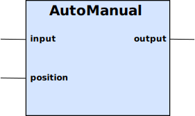

AutoManual block is the logical equivalent of an Auto-0-Manual switch.

Table 10. Inputs
| Name | Type | Default | Description |
|---|---|---|---|
input | Boolean | false | The value that the output should have when position is in Auto mode. |
position | Double | -1 | Position is the selector of Auto, On, or Off. A negative number puts the block in Auto mode and the output is set to the input. A positive number will set the output to true and 0.0 will set the output to false. |
Table 11. Outputs
| Name | Type | Description |
|---|---|---|
Output | Double | The output is set to the input, if the position is a negative number. If position is 0.0, the output is set to false, and if the position is set to a positive number, the output is set to true. |
Many electrical installations have a 3-step, rotary switch to allow people to override the automatic controls of some equipment. This block type represents that functionality in a logical manner.
This represents the input from the automatic part of the system, which could be overridden by the AutoManual block.
This represents the rotary switch itself.
| Value | Description |
|---|---|
>0 | This sets the output to ON (true). |
0.0 | This sets the output to OFF (false). |
<0 | This sets the output to follow the input. |